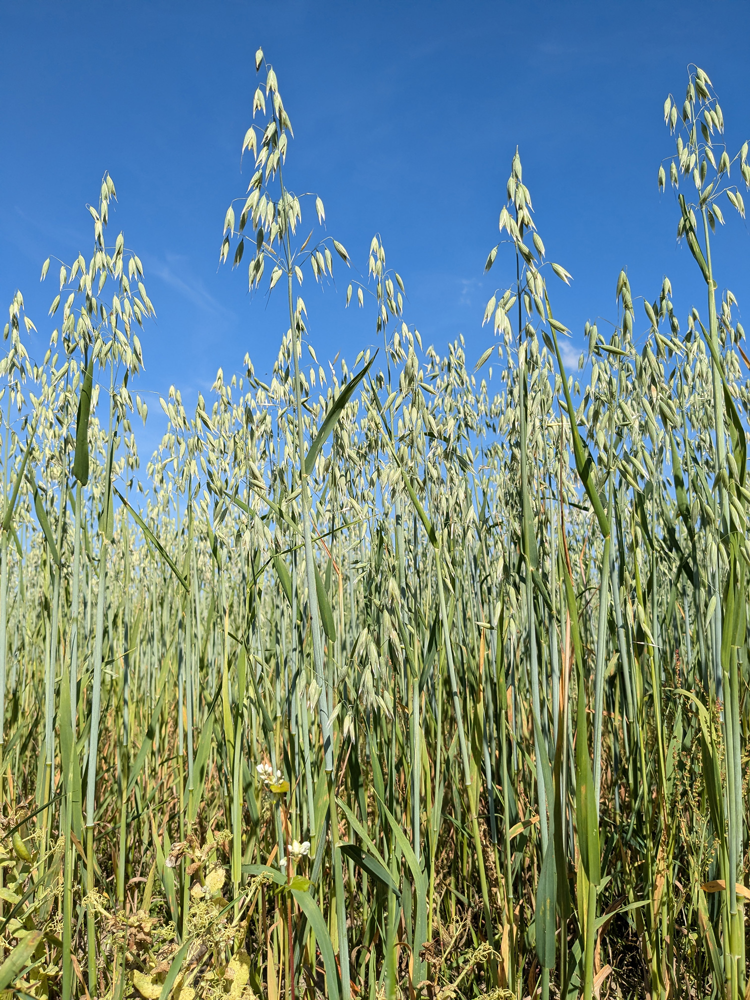

Avena sativa
| common name | oat | |
| en español | avena | |
| plant family | Poaceae (grass) | |
| parts used | fresh and dried whole plant and seeds |
 from Wikimedia Commons by Christian Fischer, CC BY-SA 4.0
{kind=link}
observations/description
dried oat tops
- light green oat tops, light golden yellow in places
- light aroma, bright and grassy
"Oat", Wikipedia
- tall stout grass
- leaves are long, narrow, and pointed, and grow upwards
- at the top of the stem, the plant branches into a loose cluster or panicle of spikelets that the wind-pollinated flowers, which mature into the oat seeds or grains
- botanically the grain is a caryopsis, as the wall of the fruit is fused on to the actual seed
- like other cereal grains, the caryopsis contains the outer husk or bran, the starchy food store or endosperm which occupies most of the seed, and the protein-rich germ which if planted in soil can grow into a new plant
distribution/conservation status
"Oat", Wikipedia
- cultivated for some thousands of years before they were domesticated
- domesticated oat grains first appear in the archaeological record in Europe around 3000 years ago
- best grown in temperate regions
- lower summer heat requirement and greater tolerance of (and need for) rain than other cereals; tolerate cold winters less well than other cereals
- particularly important in areas with cool, wet summers, such as Northwest Europe
- can grow in most fertile, drained soils, being tolerant of a wide variety of soil types
primary actions
The Yoga of Herbs, p. 208
- nervine, antispasmodic, tonic
The Modern Herbal Dispensatory, p. 274-5
- bulk laxative, mineralizer, nervine tonic
The New Age Herbalist, p. 60-1
- nutritive tonic, nervine tonic
system affinities
nervous
primary uses
Spiritual Herbalism, p. 162
- highly restorative to the nerves
- nutrient dense; rich in B-complex vitamins and magnesium, which are required for healthy nervous system function
- nourishes and protects the myelin sheathes surrounding nerves
- builds resistence and resilience to stress
- nourishing and restorative to individuals whose nervous feel dry and brittle from long-term stress
The New Age Herbalist, p. 60-1
- valuable nutritionally for their vitamins, minerals, and protein
- excellent nerve tonic
- avenine stimulates the central nervous system
- causes horses fed on substatial quantities of oats to become highly excitable
- whole plant in medicinal doses provides a range of therapeutic and nutritional components that feed a debilitated nervous system
- valuable remedy for exhaustion, convalescence, depression
The Modern Herbal Dispensatory, p. 274-5
- milky (unripe) seeds of oat grain are used as a remedy for a depleted nervous system
- milky oats combines well with almost every other nervine
- works best for people with mental and physical exhaustion who are irritable and/or lack focus
- supports palpitations and lack of libido due to stress
- supports recovery from drug addiction
- oatstraw rich in silica, used as a mineralizer and mild nervine
- oat bran used as a bulk laxative and an agent to reduce cholesterol
notes from class, 27 May 2025
- nervous system tonic
- best used fresh
- tincture should be cloudy and greenish white
- good for depression, anxiety
- demulcent, moisturizing
- helpful for lowering cholesterol
- nutritive; contains magnesium and B vitamins
- can help build immunity
- takes a fairly high dose and takes a long time (up to 3-6 months) for tonic effects
- good for long-term stress, nervous system weakness/exhaustion, depression, emotional trauma
- nourishes and moistens endocrine glands
- improves circulation
energetics
The Yoga of Herbs, p. 208
- reduces vāta, pitta; increases kapha
- sweet taste - sweet post-digestive effect
- cooling
The Modern Herbal Dispensatory, p. 274-5
- neutral, moistening, nourishing
pharmacology
The New Age Herbalist, p. 60-1
- saponins, alkaloids (incl. trigonelline, avenine), a sterol, flavonoids, starch, protein (gluten), fats, minerals (incl. silica, iron, calcium, copper, magnesium, zinc), vitamin B
contraindications/pharmaceutical interactions/warnings
Spiritual Herbalism, p. 162
- none
The New Age Herbalist, p. 60-1
- over-large doses may cause headaches at the back of the head
The Modern Herbal Dispensatory, p. 274-5
- use cautiously with gluten sensitivity or allergy
preparations
The Modern Herbal Dispensatory, p. 274-5
- standard infusion
- dried oat straw, 30 g: 1 L
- tincture
- fresh seed, 1:2, 95% alcohol
- glycerite
- dried green oat straw, 1:6
Herbal Materia Medica, p. 9
- standard infusion
- dried straw, 1:32
- tincture
- unripe fresh seed with 'milky' center, 1:2
The Herbal Medicine-Maker's Handbook, p. 110, 155, 192
- hot infusion
- dried spikelets and straw, 3-5 g: 8 oz
- tincture
- fresh unripe 'milky' seed, 1:1.75 or 1:2, 50-75% alcohol
- glycerite
- fresh unripe 'milky' seed, 1:1.75 or 1:2, 60-80% glycerin
- dry plant, 1:4, 60% glycerin
dosage
The Modern Herbal Dispensatory, p. 274-5
- standard infusion: 4-8 oz, 1-4/day
- tincture: 10-30 drops, 3-5/day
- glycerite: 10-20 mL, 3/day
Herbal Materia Medica, p. 9
- standard infusion: 4-8 oz
- tincture: 10-20 drops, up to 4/day
The Heral Medicine-Maker's Handbook, p. 110, 155, 187
- hot infusion: 8 oz, 3/day
- tincture: 2-5 mL, up to 4/day
- glycerite: up to 5 mL, 2-3/day
notes from class, 27 May 2025
- tincture: 1 tsp, up to 3/day
extra information
The New Age Herbalist, p. 60-1
- family Poaceae also known as Gramineae
personal experiences/simples
tisane (1.5 tsp: 12 oz, 20 minutes), dried oatstraw
- aroma became a little stronger and more distinctly oaty
- water still completely clear after 10 minutes, going to let steep another 10
- extremely pale yellow-green hue
- light, bright, sweet taste of oats
- feels and tastes very nutritive
- felt a compulsion to drink very quickly; yet time feels like it has slightly slowed
macerate (2 tbsp: 16 oz, 12 hours), dried oatstraw
- extremely pale yellow-green hue, a little more pronounced than the tisane
- light aroma, more chlorophyll-y than the tisane
- stronger taste, still quite light; bright, more chlorophyll-y and more oaty than the tisane
- very crisp in the mouth, but still tastes nutritive and sweet
- feels cooling
- oats have something to do with time/slowing down
witchcraft
Spiritual Herbalism, p. 162
- recommended when addressing burnout, grief, sudden shock, trauma
- supports those involved in social justice movements
- helpful when you feel like you need support but don't have people or systems around you to provide it
recipes
sources
Easely, Thomas and Steven Horne. The Modern Herbal Dispensatory (2016)
Frawley, David and Vasant Lad. The Yoga of Herbs: An Ayurvedic Guide to Herbal Medicine (1986)
Goldberg Blackthorn, Samantha and Shona MacDougal. Ace of Cups Herbal Medicine and Botanical Magic Herbal School (2024)
Green, James. The Herbal Medicine-Maker's Handbook: A Home Manual (2000)
Mabey, Richard et al. The New Age Herbalist (1988)
Moore, Michael. Herbal Materia Medica, Fifth Edition (1995)
"Oat" on Wikipedia. Retrieved 29 May 2025.
Rose, Karen M. The Art & Practice of Spiritual Herbalism (2022)